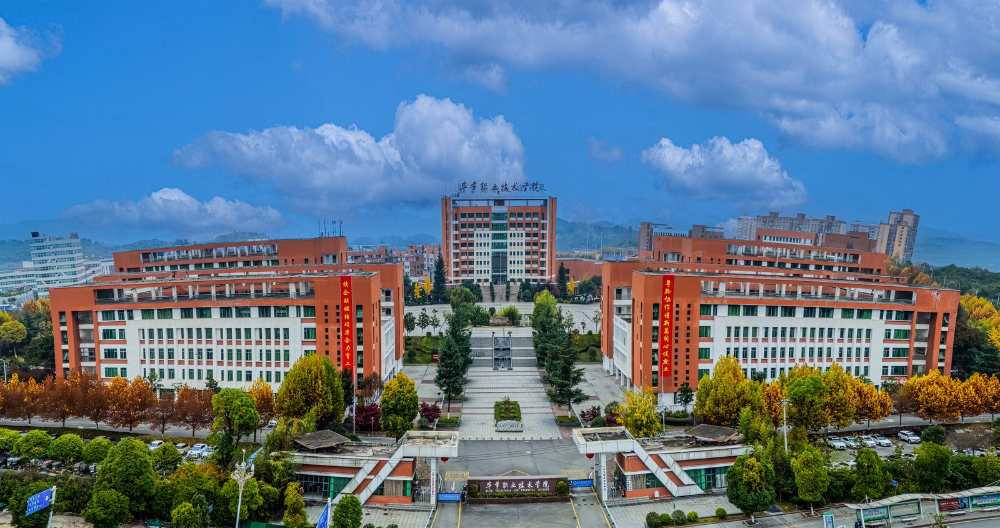

毕节职业技术学院于2008年2月经贵州省人民政府批准组建，办学历史可追溯至1956年创办的毕节农业学校。学校总面积740亩，建筑面积30多万平方米，是贵州省第一批和第二批“双高计划”建设单位，设置农业工程系、工矿建筑系、电子信息工程系、财政经济系、旅游管理系、教育科学系、医学护理系等7个二级院系，以及基础教育部、思想政治理论教研部、继续教育与培训部等3个教学部，绿色智慧能源、山地特色农业、智能制造等专业群获评省级高水平专业群。开设高职专业30个，在校生1万余人。现有专任教师580多人。获职业教育国家级教学成果二等奖1项，省级职业教育教学成果特等奖1项、一等奖3项、二等奖1项。先后被授予国家级高技能人才培训基地、全国急救教育试点、黄炎培职业教育奖“杰出校长奖”、全国五四红旗团支部、全国生态文明教育特色学校、全国公共机构能效领跑者、省级东西部协作示范校、贵州省脱贫攻坚先进党组织、贵州省安全文明校园等荣誉称号。
在统一战线的倾情帮扶下，上海第二工业大学、天津职业技术师范大学、天津中德应用技术大学、深圳职业技术大学、广州职业技术大学等院校长期对我校开展对口帮扶；成功获批“中华职教社毕节同心培训学院”，并与安徽职业技术大学、芜湖职业技术大学、宜宾职业技术学院、广西职业技术学院等优质院校签订合作协议。学校深入实施东西部协作战略，与广东省政行校企深入合作，挂牌成立“毕节·广州人力资源开发基地”；建成了“广东技工、粤菜师傅、南粤家政”三大培训基地，与广州港集团、广州地铁集团、小米通讯技术有限公司、三六零数字安全科技集团有限公司、奇瑞集团、京东等20多家头部企业，携手广州轻工技师学院等院校，累计创办订单班60多个。
学校始终坚持“立德树人、以文化人”办学理念，践行“知行合一、自信创新”校训，凝练形成了“同心致远、仁心育人、匠心治学”的“同心”特色校园文化。相继获批兴黔富民、技能贵州等项目50余项，建成智能矿山产教融合实训基地、社会服务产教融合实训基地、贵州山地特色农业数字化实习实训基地等，以及思政课教学协同创新中心、贵州省毕节人力资源服务产业园等一批重大教学实训平台。牵头成立全国乡村生态旅游行业产教融合共同体、穗毕人力资源开发协作产教联盟、西南地区新型综合能源行业产教融合共同体等近10个；组建农产品协同创新中心等技术技能创新服务平台及毕节市职业教育发展研究中心，立项教育部、省科技厅、教育厅及市级科研项目100余项。与广州职业技术大学等院校联动，积极参与“中国-东盟教育交流周”系列活动。学生在国家级、省级职业院校技能大赛中斩获奖项350余项，教师在省级以上教学能力大赛中获奖30余项。近五年来，应届高职毕业生双证率均超过90%，毕业生去向落实率均保持在95%以上，人才培养质量得到社会广泛认可。
学校正在以建设贵州省“双高计划”学校为目标，加快构建职普融通、产教融合、中高本一体化发展的市域现代职业教育体系，全面开启建设区域性综合性特色化高水平职业院校新征程，为助推毕节建设贯彻新发展理念示范区贡献职业教育力量。
